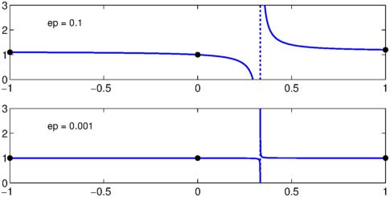
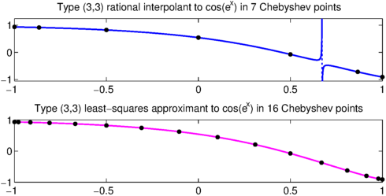
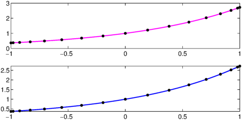

A rational function is a quotient of two polynomials. Many numerical algorithms make use of rational interpolants and approximants, including well-known methods for acceleration of convergence of sequences and series like the Aitken delta-squared formula and the epsilon and eta algorithms [2].
In Chebfun, since functions are defined on intervals, a natural form of rational interpolation involves sample points in an interval. In particular, if $f$ is a function defined on $[a,b]$ and $m$ and $n$ are nonnegative integers, then one may ask for a rational function of type $(m,n)$ that interpolates $f$ at the $N+1$ Chebyshev points in $[a,b]$, where $N = m+n$. By "type $(m,n)$", we mean representable as a quotient $p(x)/q(x)$ with $p$ of degree at most $m$ and $q$ of degree at most $n$. If $N>m+n$, then the problem is overdetermined one may still ask for a rational approximant to $f$ but now based on some kind of least-squares fit.
Here are three examples taken from Chapter 26 of [4]; some of our wording is also copied from there. The first is a problem that can be solved analytically. Suppose we seek a type $(1,1)$ rational function $r$ with $r(-1)=1+\varepsilon$, $r(0)=1$, and $r(1)=1+2\varepsilon$, where $\varepsilon$ is a parameter. The exact solution is
x = chebfun('x');
r = @(ep) 1 + (4/3)*ep*x./(x-(1/3));
Here are plots for $\varepsilon=0.1$ and $0.001$:
MS = 'markersize'; LW = 'linewidth'; FS = 'fontsize'; clf for j = 1:2 ep = 10^(1-2*j); subplot(2,1,j), plot(r(ep),LW,1.6), axis([-1 1 0 3]) hold on, plot([-1 0 1],[1+ep 1 1+2*ep],'.k',MS,20) text(-.8,2.3,['ep = ' num2str(ep)],FS,12) end

We see that in this particular case, the interpolant could hardly be considered to be an good approximation over the interval $[-1,1]$. It has a pole at $x=1/3$ that gets weaker as $\varepsilon$ decreases to zero (the residue is $4\varepsilon/3$), but never goes away so long as $\varepsilon$ is nonzero. One can think of this as a nearly-cancelling pole-zero pair: the nearby zero is at $1/(3-4\varepsilon))$.
So we see that rational interpolation can be tricky! "Spurious" pole-zero pairs of rational approximations may appear in unexpected places, leading to approximants that lack the properties one might like. This happens in exact arithmetic, and it happens even more often in finite-precision arithmetic, where rounding errors may generate additional pole-zero pairs that shouldn't be there in principle.
Chebfun has a command ratinterp for computing rational interpolants, which uses Chebyshev points by default but can also be applied with arbitrary points. We could have generated the above pictures with the commands
fj = [1+ep 1 1+2*ep];
[p,q] = ratinterp(fj,1,1);
r = p./q;
Here is our second example. Define
f = cos(exp(x));
and suppose we want to construct rational interpolants of type $(n,n)$ to $f$ based on samples at $2n+1$ Chebyshev points in $[-1,1]$. Here is a table of the maximum errors obtained by ratinterp for $n=1,2,3,4,5,6$:
disp(' (n,n) Error ')
for n = 1:6
[p,q] = ratinterp(f,n,n);
err = norm(f-p./q,inf);
fprintf(' (%1d,%1d) %7.2e\n',n,n,err)
end
(n,n) Error
(1,1) 2.46e-01
(2,2) 7.32e-03
(3,3) Inf
(4,4) 6.11e-06
(5,5) 4.16e-07
(6,6) 6.19e-09
We seem to have very fast convergence, but what has gone wrong with the type $(3,3)$ approximant? The first plot below reveals that the problem is another spurious pole. In such cases, one can often get better results by calling ratinterp with a value of $N$ specified bigger than the default of $m+n$. In this case the code out a certain kind of linear least-squares fit, and we can see in the lower plot that the choice $N=15$ eliminates the spurious pole for this problem. We use a magenta color as a symbol for a robust computation.
clf subplot(2,1,1) [p,q] = ratinterp(f,3,3); hold off, plot(p./q,LW,1.6), hold on xx = chebpts(7); plot(xx,f(xx),'.k',MS,16) title(['Type (3,3) rational interpolant to cos(e^x) in 7 Chebyshev points']) subplot(2,1,2) [p,q] = ratinterp(f,3,3,15); hold off, plot(p./q,'m',LW,1.6), hold on xx = chebpts(16); plot(xx,f(xx),'.k',MS,16) title(['Type (3,3) least-squares approximant to cos(e^x) in 16 Chebyshev points'])

For our final example, suppose we want the interpolant of type $(8,8)$ to $\exp(x)$ in $17$ Chebyshev points. A computation with ratinterp is very successful, as shown by the first plot below. However, this success is a tribute to the robustness features of ratinterp when called in its default mode. By default, ratinterp uses an approximation procedure that is more robust than pure interpolation, based on the singular value decomposition, which often manages to eliminate spurious poles introduced by rounding errors. We can turn off this robustness by repeating the computation with a tolerance of $0$ rather than the default $10^{-14}$, and that is what is done in the second panel of the plot. The plot looks the same! In fact it isn't though; there's a spurious pole-zero pair that has gone undected. We can see it like this:
f = exp(x); [p,q] = ratinterp(f,8,8); clf, subplot(2,1,1), plot(p./q,'m',LW,1.6), hold on xx = chebpts(17); plot(xx,exp(xx),'.k',MS,16) tol = 0; [p,q] = ratinterp(f,8,8,[],[],tol); subplot(2,1,2), plot(p./q,LW,1.6), hold on xx = chebpts(17); plot(xx,exp(xx),'.k',MS,16)

format long spurious_zeros = roots(p) spurious_poles = roots(q) separation = spurious_poles - spurious_zeros
spurious_zeros =
-0.705459053873448
0.374674058140232
spurious_poles =
-0.705459053873448
0.374674058140232
separation =
1.0e-15 *
0
-0.499600361081320
The computation of the first panel, by contrast, had no spurious poles. To achieve this, ratinterp actually returned an approximation of type less than the allowed $(8,8)$, as we can see like this:
[p,q,rh,mu,nu] = ratinterp(f,8,8); degree_of_p = mu spurious_zeros = roots(p) degree_of_q = nu spurious_poles = roots(q)
degree_of_p =
8
spurious_zeros =
Empty matrix: 0-by-1
degree_of_q =
4
spurious_poles =
Empty matrix: 0-by-1
The interpolation algorithm of ratinterp, and the code itself, originate with [3]. The generalization to least-squares approximations and robust approximants comes from [1], though that paper discusses just roots of unity on the unit circle, not Chebyshev points in $[-1,1]$.
References
-
P. Gonnet, R. Pachon and L. N. Trefethen, Robust rational interpolation and least-squares, Electronic Transactions of Numerical Analysis, 38 (2011), 146-167.
-
Journal of Computational and Applied Mathematics special issue on interpolation and extrapolation, volume 122, numbers 1-2, October 2000.
-
R. Pachon, P. Gonnet and J. van Deun, Fast and stable rational interpolation in roots of unity and Chebyshev points, SIAM Journal on Numerical Analysis, 50 (2012), 1713-1734.
-
L. N. Trefethen, Approximation Theory and Approximation Practice, SIAM, 2013.